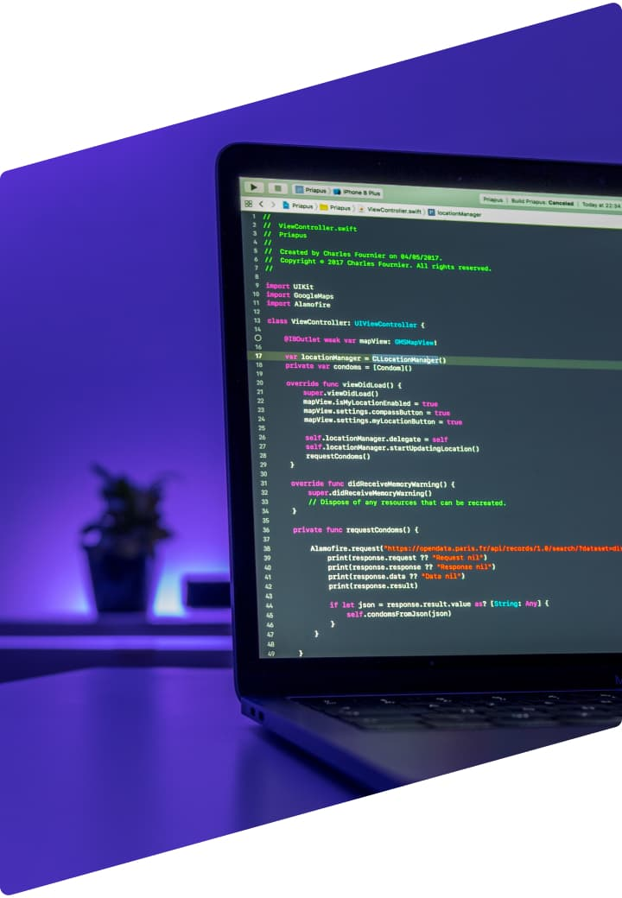

Desenvolvedor
Front End
Localizado em São Gonçalo - RJ

Localizado em São Gonçalo - RJ
Desenvolvo pequenos projetos como o Bikcraft utilizando apenas HTML, CSS e JavaScript. Para aplicativos web como a rede social Dogs eu trabalhei com UX e UI Design no projeto.
No projeto Bikcraft eu trabalhei no desenvolvimento completo do HTML, CSS e JavaScript do site. Além disso, também trabalhei no processo do Design.
O projeto Animais Fantásticos foi desenvolvido utilizando HTML, CSS e JS e foi pensado na prática de JavaScript.
Projeto desenvolvido utilizando apenas HTML e CSS para prática de Flexbox CSS e CSS Grid. Todo o Projeto foi feito do zero.
Minha mais recente experiência acadêmica foi o curso de Formação Inicial e Continuada em Desenvolvimento Web na IFRJ. Além disso me mantenho sempre atualizado com cursos intensivos online.